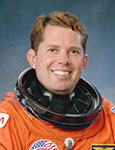

Lyndon B. Johnson Space Center
Houston, Texas 77058
|
National Aeronautics and Space Administration Lyndon B. Johnson Space Center Houston, Texas 77058 |
 |
Biographical Data |
||
David C. Leestma (CAPTAIN, U.S. NAVY, RET.)
NASA ASTRONAUT (FORMER)
PERSONAL DATA: Born May 6, 1949, in Muskegon, Michigan. Married to the former Patti K. Opp of Dallas, Texas. They have six children. He enjoys golfing, tennis, flying, and fishing. His parents, Dr. and Mrs. Harold F. Leestma, reside in Anaheim Hills, California. Her parents, Mr. and Mrs. Robert L. Opp, reside in New Braunfels, Texas.
EDUCATION: Graduated from Tustin High School, Tustin, California, in 1967; received a Bachelor of Science degree in Aeronautical Engineering from the United States Naval Academy in 1971, and a Master of Science degree in Aeronautical Engineering from the U.S. Naval Postgraduate School in 1972.
ORGANIZATIONS: Associate Fellow, American Institute of Astronautics and Aeronautics (AIAA); Life Member, Association of Naval Aviation.
SPECIAL HONORS: The Distinguished Flying Cross, Legion of Merit, Defense Superior Service Medal, Defense Meritorious Service Medal, Navy Commendation Medal, Navy Achievement Medal, Meritorious Unit Commendation (VX-4), National Defense Service Medal, Battle "E" Award (VF-32), the Rear Admiral Thurston James Award (1973), the NASA Space Flight Medal (1984, 1989, 1992), the NASA Exceptional Service Medal (1985, 1988, 1991, 1992), the NASA Outstanding Leadership Medal (1993, 1994), the NASA Exceptional Achievement Medal (2010), and the NASA Silver Achievement Medal (2013). He was awarded the Presidential Rank of Meritorious Executive in 1998 and again in 2004.
EXPERIENCE: Leestma was graduated first in his class from the U.S. Naval Academy in 1971. As a first lieutenant afloat, he was assigned to USS Hepburn (DE-1055) in Long Beach, California, before reporting in January 1972 to the U.S. Naval Postgraduate School. He completed flight training and received his wings in October 1973. He was assigned to VF-124 in San Diego, California, for initial flight training in the F-14A Tomcat and then transferred to VF-32 in June 1974 and was stationed at Virginia Beach, Virginia. Leestma made three overseas deployments to the Mediterranean/North Atlantic areas while flying aboard the USS John F. Kennedy (CV-67). In 1977, he was reassigned to Air Test and Evaluation Squadron Four (VX-4) at Naval Air Station Point Mugu, California. As an operational test director with the F-14A, he conducted the first operational testing of new tactical software for the F-14 and completed the follow-on test and evaluation of new F-14A avionics, including the programmable signal processor. He also served as fleet model manager for the F-14A tactical manual.
He has logged more than 3,500 hours of flight time, including nearly 1,500 hours in the F-14A.
NASA EXPERIENCE: Leestma was selected to become an astronaut in 1980. Following his first flight, he served as a Capsule Communicator (CAPCOM) for STS-51C through STS-61A. He was then assigned as the Chief, Mission Development Branch responsible for assessing the operational integration requirements of payloads that will fly aboard the shuttle. From February 1990 to September 1991, when he started training for his third space mission, Leestma served as Deputy Director of Flight Crew Operations. Following this flight, he served as Deputy Chief and acting Chief of the Astronaut Office. Leestma was selected as the Director, Flight Crew Operations Directorate (FCOD) in November 1992. As Director, FCOD, he had overall responsibility for the Astronaut Office and for Johnson Space Center (JSC) Aircraft Operations. During his tenure as Director, 41 shuttle flights and seven Mir missions were successfully flown. He was responsible for the selection of Astronaut Groups 15, 16 and 17. While Director, he oversaw the requirements, development modifications of the T-38A transition to the T-38N avionics upgrades. In September 1998, Leestma was reassigned as the Deputy Director, Engineering, in charge of the management of JSC Government Furnished Equipment (GFE) Projects.
In August 2001, he was assigned as the JSC Project Manager for the Space Launch Initiative, responsible for all JSC work related to the development of the new launch system. Leestma also served as the Assistant Program Manager for the Orbital Space Plane, responsible for the vehicle systems and operations of a new crewed vehicle that is to serve as the transfer vehicle for space flight crews to and from the International Space Station. He then served as the Manager, JSC Exploration Programs Office, responsible for JSC's role in the future exploration programs that will fulfill the President's vision for exploration. Leestma then took charge of the JSC Advanced Planning Office, which helped to plan JSC's strategy to be fully ready for the challenges of the future, including leading the human missions to the moon and Mars. His latest assignment was to lead JSC's Technology Transfer and Commercialization Office, providing the opportunity for NASA developed technologies to move into the commercial arena.
A veteran of three space flights, Leestma has logged a total of 532.7 hours in space. He served as a mission specialist on STS-41G (October 5-13, 1984), STS-28 (August 8-13, 1989), and STS-45 (March 24 to April 2, 1992).
Leestma retired from NASA on May 30, 2014. He will remain in the Houston area.
SPACE FLIGHT EXPERIENCE: STS-41G Challenger, launched from Kennedy Space Center, Florida, on October 5, 1984. It was the sixth flight of the Orbiter Challenger and the thirteenth flight of the Space Shuttle Program. The seven-person crew also included two payload specialists: one from Canada, and one a Navy oceanographer. During the mission the crew deployed the ERBS satellite using the remote manipulator system (RMS), operated the OSTA-3 payload (including the SIR-B radar, FILE, and MAPS experiments) and the Large Format Camera (LFC), conducted a satellite refueling demonstration using hydrazine fuel with the Orbital Refueling System (ORS), and conducted numerous in-cabin experiments as well as activating eight "Getaway Special" canisters. David Leestma and Kathryn Sullivan successfully conducted a 3-1/2 hour spacewalk (EVA) to demonstrate the feasibility of actual satellite refueling. The flight concluded with the second landing of a space shuttle at NASA's Kennedy Space Center, Florida, on October 13, 1984, after 143 Earth orbits.
STS-28 Columbia launched from Kennedy Space Center, Florida, on August 8, 1989. The mission carried Department of Defense payloads and a number of secondary payloads. After 80 Earth orbits, this five-day mission concluded with a lakebed landing on Runway 17 at Edwards Air Force Base, California, on August 13, 1989.
STS-45 Atlantis launched from the Kennedy Space Center, Florida on March 24, 1992. During the nine-day mission the crew operated the 12 experiments that constituted the ATLAS-1 (Atmospheric Laboratory for Applications and Science) cargo. ATLAS-1 obtained a vast array of detailed measurements of atmospheric, chemical and physical properties, which will contribute significantly to improving our understanding of our climate and atmosphere. STS-45 landed on April 2, 1992 on Runway 33 at the Kennedy Space Center, Florida, after completing 142 Earth orbits.
MAY 2014
This is the only version available from NASA. Updates must be sought direct from the above named individual.